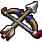
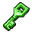
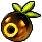
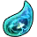

Randomizer Settings
Starting Items
-

Click to start with it or step it up; right-click steps backTap to start with it or step it up -

Set by another setting; hover to see which -

Locked on by another setting -

Not a starting item